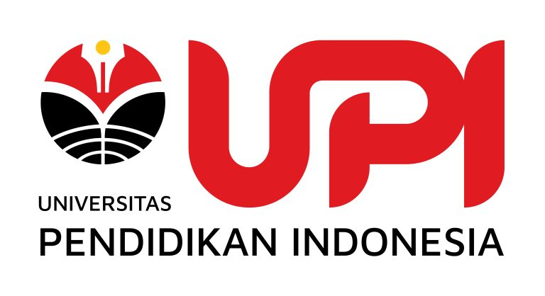

Program Magister Pendidikan Guru
Perkenalkan, saya Felinda Aprilia Rahma, mahasiswa Program Magister (S2) Pendidikan Guru, Universitas Pendidikan Indonesia. Saat ini saya sedang menyusun tesis yang berfokus pada hubungan antara metakognisi digital dan literasi Artificial Intelligence (AI) pada guru Informatika.
Penelitian ini bertujuan untuk memahami bagaimana guru mengelola, merefleksikan, serta memanfaatkan teknologi digital dan AI dalam proses pembelajaran, serta bagaimana tingkat pemahaman terhadap konsep AI dimiliki oleh guru. Hasil penelitian ini diharapkan dapat memberikan kontribusi dalam pengembangan kompetensi guru di era digital dan kecerdasan buatan.
Informasi Pengisian Kuesioner Kuesioner ini terdiri dari dua instrumen penelitian, yaitu:
Terima kasih atas kesediaan Bapak/Ibu untuk berpartisipasi dalam penelitian berjudul:
"Studi Korelasional Metakognisi Digital dan Literasi Artificial Intelligence pada Guru Informatika"
Dalam penelitian ini, Bapak/Ibu akan diminta untuk mengisi kuesioner yang berkaitan dengan:
Tidak ada jawaban benar atau salah dalam kuesioner ini. Jawaban yang diharapkan adalah sesuai dengan kondisi dan pengalaman Bapak/Ibu yang sebenarnya.
Seluruh informasi yang diberikan akan dijaga kerahasiaannya. Data yang dikumpulkan hanya digunakan untuk kepentingan akademik dan tidak akan mencantumkan identitas pribadi dalam publikasi atau laporan penelitian.
Penelitian ini tidak menimbulkan risiko yang signifikan. Manfaat yang diharapkan:
Sebagai partisipan, Bapak/Ibu memiliki hak untuk:
Dengan memilih “Bersedia”, Bapak/Ibu menyatakan bahwa: